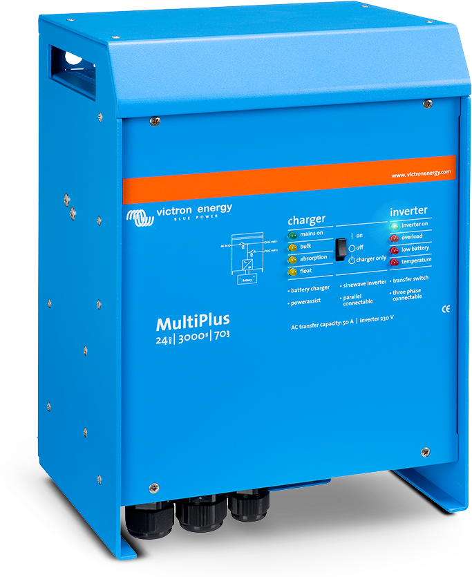
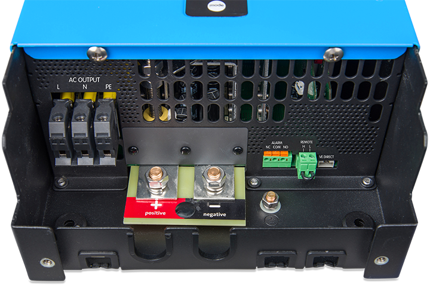

The MultiPlus, as the name suggests, is a combined inverter and charger in one elegant package. Its many
features include a true sine wave inverter, adaptive charging, hybrid PowerAssist technology, plus
multiple system integration features.
The MultiPlus will prevent overload of a limited AC source, such as a generator or shore power
connection. First, battery charging will automatically be reduced when otherwise an overload would
occur. The second level will boost the output of a generator or shore side supply with power taken from
the battery.

Order Product
Victron Phoenix inverter 12V 1200W VE.Direct
Inverters allow you to power domestic equipment - requiring 230V/120V AC - using 'leisure' or
'automotive' batteries rated at 12V, 24V or 48V DC.
The VE.Direct port can be connected to:
- A computer (VE.Direct to USB interface cable needed)
- Apple and Android smartphones, tablets, MacBook’s and other devices
(VE.Direct Bluetooth Smart dongle needed)
 Order Product
Order Product
Victron Smart inverter 12V 2000W 230V
The Phoenix Inverter Smart is an efficient and reliable inverter. Built on our proven and field tested
Phoenix inverter platform, it now comes with a new slimmer design and full metal casing. Models are
available in 1600VA, 2000VA and 3000VA for 12, 24 or 48V systems.
It’s powerful enough to supply most common plug in appliances in your car, boat, caravan or home. A
toroidal transformer provides a high peak power surge capacity, stable voltage, frequency and high
quality sine-wave.
Installation is simpler than ever before with terminals now more accessible for the installer, enabling
a more professional finish.

Order Product